Что приготовить из картошки
Пюре, драники, запечённая и жареная картошка, супы. 36 рецептов: у каждого время, калории и БЖУ на порцию, пошаговые инструкции и список покупок
- Сырный суп35 мин · 374 ккал · Б 17 г · Суп
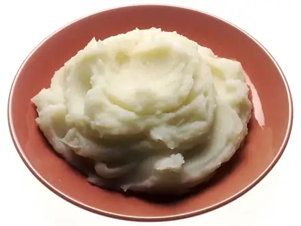
Картофельное пюре35 мин · 312 ккал · Б 6 г · Гарнир Окрошка на кефире40 мин · 309 ккал · Б 17 г · Суп
Окрошка на кефире40 мин · 309 ккал · Б 17 г · Суп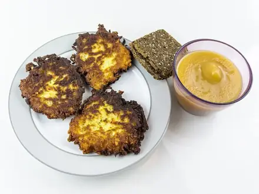
Драники40 мин · 445 ккал · Б 8 г · Второе блюдо Овощной суп-пюре40 мин · 94 ккал · Б 3 г · Суп
Овощной суп-пюре40 мин · 94 ккал · Б 3 г · Суп Щи из свежей капусты45 мин · 119 ккал · Б 4 г · Суп
Щи из свежей капусты45 мин · 119 ккал · Б 4 г · Суп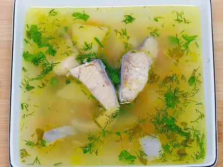
Уха45 мин · 239 ккал · Б 27 г · Суп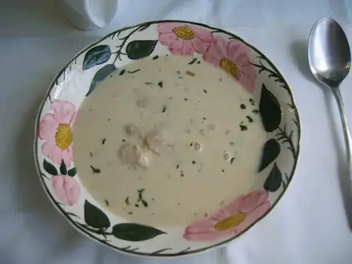
Грибной суп50 мин · 163 ккал · Б 5 г · Суп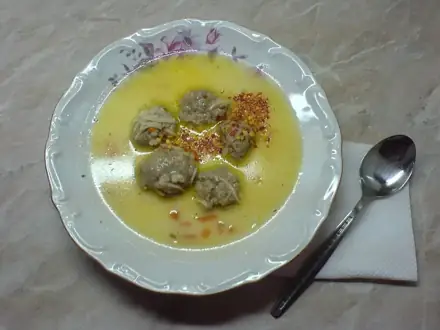
Суп с фрикадельками50 мин · 329 ккал · Б 18 г · Суп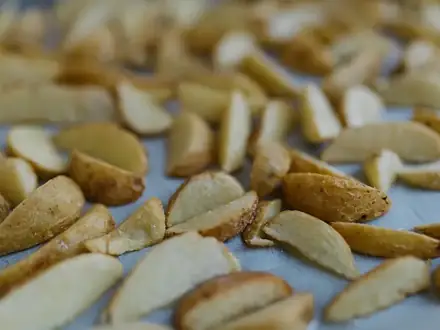
Картофель дольками в духовке50 мин · 290 ккал · Б 5 г · Гарнир Овощное рагу50 мин · 228 ккал · Б 5 г · Второе блюдо
Овощное рагу50 мин · 228 ккал · Б 5 г · Второе блюдо Минестроне50 мин · 235 ккал · Б 8 г · Суп
Минестроне50 мин · 235 ккал · Б 8 г · Суп- Грибная лапша постная50 мин · 168 ккал · Б 7 г · Суп
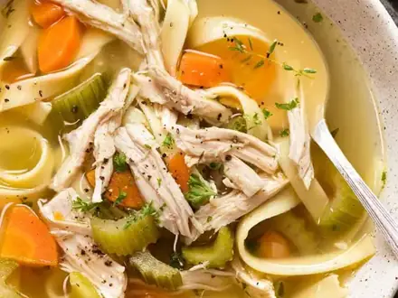
Куриный суп с лапшой60 мин · 275 ккал · Б 21 г · Суп Оливье60 мин · 494 ккал · Б 16 г · Салат
Оливье60 мин · 494 ккал · Б 16 г · Салат Салат Мимоза с сардинами60 мин · 455 ккал · Б 21 г · Салат
Салат Мимоза с сардинами60 мин · 455 ккал · Б 21 г · Салат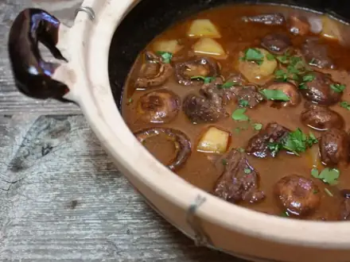
Картофельное рагу с грибами60 мин · 315 ккал · Б 10 г · Второе блюдо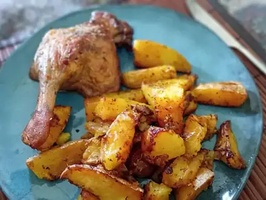
Куриные бёдра с картошкой в духовке65 мин · 765 ккал · Б 51 г · Второе блюдо- Колдуны70 мин · 781 ккал · Б 26 г · Второе блюдо
 Винегрет75 мин · 178 ккал · Б 4 г · Салат
Винегрет75 мин · 178 ккал · Б 4 г · Салат Зелёный борщ со шпинатом80 мин · 349 ккал · Б 27 г · Суп
Зелёный борщ со шпинатом80 мин · 349 ккал · Б 27 г · Суп Кугель картофельный80 мин · 290 ккал · Б 7 г · Гарнир
Кугель картофельный80 мин · 290 ккал · Б 7 г · Гарнир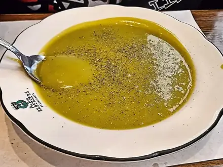
Гороховый суп постный90 мин · 228 ккал · Б 10 г · Суп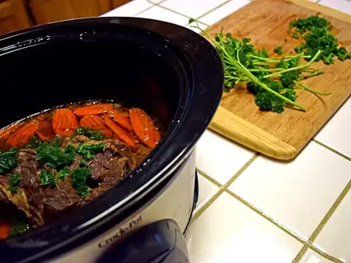
Жаркое со свининой в горшочках100 мин · 533 ккал · Б 24 г · Второе блюдо- Эчпочмак100 мин · 721 ккал · Б 27 г · Выпечка
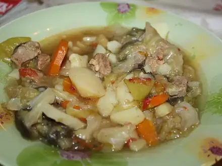
Азу по-татарски100 мин · 574 ккал · Б 33 г · Второе блюдо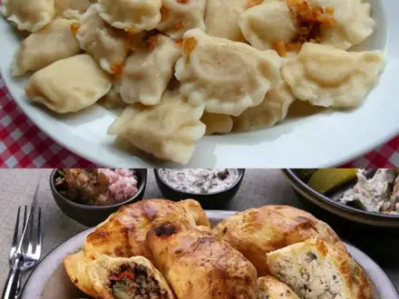
Вареники с картошкой100 мин · 515 ккал · Б 12 г · Второе блюдо Селёдка под шубой100 мин · 437 ккал · Б 16 г · Салат
Селёдка под шубой100 мин · 437 ккал · Б 16 г · Салат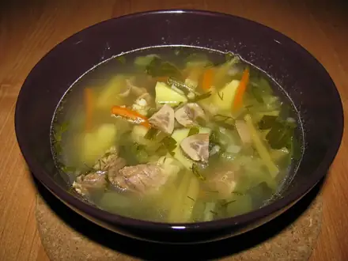
Рассольник120 мин · 304 ккал · Б 19 г · Суп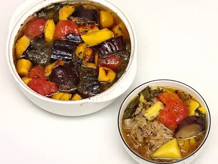
Чанахи в горшочках120 мин · 499 ккал · Б 30 г · Второе блюдо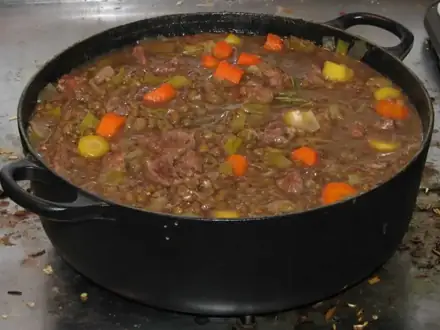
Чечевичная похлёбка с бараниной120 мин · 336 ккал · Б 23 г · Суп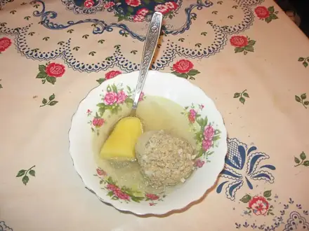
Кюфта-бозбаш130 мин · 366 ккал · Б 21 г · Суп Борщ150 мин · 349 ккал · Б 23 г · Суп
Борщ150 мин · 349 ккал · Б 23 г · Суп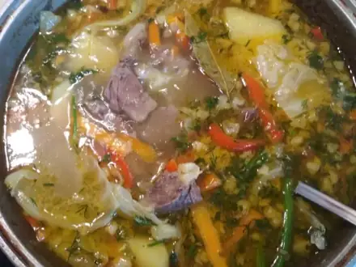
Шурпа из баранины150 мин · 462 ккал · Б 30 г · Суп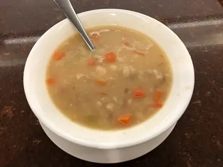
Фасолевый суп постный150 мин · 160 ккал · Б 9 г · Суп- Кыстыбый с картофелем60 мин · 612 ккал · Б 14 г · Второе блюдо
Другие подборки
- Что приготовить из курицы
- Что приготовить из фарша
- Что приготовить из мяса
- Что приготовить из рыбы
- Что приготовить из яиц
- Что приготовить из творога
- Что приготовить из кабачков
- Что приготовить из капусты
- Что приготовить из грибов
- Что приготовить из риса
- Что приготовить из макарон
- Что приготовить из гречки
- Быстрый ужин за 30 минут
- Быстрый завтрак за 20 минут
- Что приготовить на скорую руку
- ПП-рецепты: лёгкие блюда до 400 ккал
- Белковые блюда: от 25 г белка на порцию
- Дешёвые рецепты из простых продуктов
- Что приготовить ребёнку
- Постные блюда
- Блюда на пару
- Что приготовить в духовке
- Простые супы
- Простые салаты
- Выпечка и десерты
- Блюда на праздничный стол
- Что приготовить из остатков